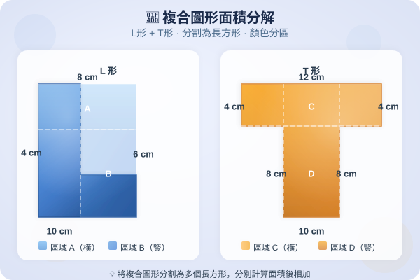

| # | 題目 | 答案 | 類型 |
|---|---|---|---|
| 1 | 計算：3.14 × 6 = ？ | 18.84 | auto |
| 2 | 計算：3.14 × 25 = ？（先算 3.14 × 5 × 5 或用直式） | 78.5 | auto |
| 3 | 一個半徑 5 cm 的圓，直徑 = ？ | ___ | manual |
| 4 | 計算：227 × 14 = ？（提示：先約簡再乘） | 3178 | auto |
| 5 | 一個正方形的邊長是 8 cm，它的周界 = ？面積 = ？ | ___ | manual |
| 6 | 半徑 = 3 cm，圓周 = ？（π = 3.14） | ___ | manual |
| 7 | 直徑 = 21 cm，圓周 = ？（π = 227） | ___ | manual |
| 8 | 半徑 = 5 cm，圓周 = ？（π = 3.14） | ___ | manual |
| 9 | 直徑 = 8 cm，圓周 = ？（π = 3.14） | ___ | manual |
| 10 | 圓周 = 31.4 cm，求半徑。（π = 3.14） | ___ | manual |
| 例3 | 半圓半徑 = 7 cm，求半圓周長。（π = 227） | ___ | manual |
| 例4 | 半圓直徑 = 16 cm，求半圓周長。（π = 3.14） | ___ | manual |
| 11 | 14 圓，r = 4 cm，扇形周長 = ？（π = 3.14） | 25.12 | manual |
| 12 | 13 圓，r = 7 cm，扇形周長 = ？（π = 227） | 44 | manual |
| 13 | 60° 扇形，r = 9 cm，扇形周長 = ？（π = 3.14） | 56.52 | manual |
| 14 | 120° 扇形，r = 6 cm，扇形周長 = ？（π = 3.14） | 37.68 | manual |
| 例7 | 半徑 = 7 cm，求圓面積。（π = 227） | ___ | manual |
| 例8 | 直徑 = 20 cm，求圓面積。（π = 3.14） | ___ | manual |
| 15 | r = 5 cm，圓面積 = ？（π = 3.14） | 78.5 | manual |
| 16 | d = 14 cm，圓面積 = ？（π = 227） | ___ | manual |
| 17 | r = 3 cm，求 (a) 圓周 (b) 圓面積。（π = 3.14） | 28.26 | manual |
| 18 | d = 10 cm，求 (a) 圓周 (b) 圓面積。（π = 3.14） | 31.4 | manual |
| 19 | 一個半圓，r = 7 cm，求它的面積。（π = 227） | 154 | manual |
| 20 | d = 6 cm，圓周 = ？（π = 3.14） | 18.84 | manual |
| 21 | r = 4 cm，圓面積 = ？（π = 3.14） | 50.24 | manual |
| 22 | r = 14 cm，圓周 = ？（π = 227） | 88 | manual |
| 23 | 半圓，r = 5 cm，求半圓周長。（π = 3.14） | 31.4 | manual |
| 24 | 14 圓，r = 8 cm，扇形周長 = ？（π = 3.14） | 50.24 | manual |
| 25 | 一個圓的圓周是 62.8 cm，求它的半徑和面積。（π = 3.14） | ___ | manual |
| 26 | 半圓直徑 = 12 cm，求半圓的周長和面積。（π = 3.14） | ___ | manual |
| 27 | 比較：半徑 7 cm 的半圓周長 vs 直徑 14 cm 的半圓周長，哪個較大？（π = 227） | 44 | manual |
| 28 | 一個 270° 扇形（34 圓），r = 6 cm，求周長。（π = 3.14） | 37.68 | manual |
| 29 | 一個圓的半徑由 4 cm 增加到 8 cm（變成 2 倍），圓面積變成原來的多少倍？ | ___ | manual |
| 30 | 一個大圓內有一個小圓。大圓半徑 10 cm，小圓半徑 6 cm。求陰影部分（大圓減小圓的環形）的面積。（π = 3.14） | 314 | manual |
| 31 | 一個正方形邊長 14 cm，內有一個最大的內切圓。求 (a) 圓的面積 (b) 正方形減去圓後餘下的面積。（π = 227） | 196 | auto |
| 32 | 一個 14 圓的半徑是 10 cm。求 (a) 它的周長 (b) 它的面積。（π = 3.14） | ___ | manual |
| 33 | 一個圓形花圃的半徑是 14 m。園丁沿花圃邊緣圍一圈籬笆。籬笆要多少米？（π = 227） | ___ | manual |
| 34 | 一個圓形水池的直徑是 20 m。求水池的面積。（π = 3.14） | ___ | manual |
| 35 | 一個半圓形窗，直徑 2 m。求 (a) 窗的周長 (b) 窗的面積。（π = 3.14） | 6.28 | manual |
| 36 | 一塊 14 圓形薄餅，半徑 12 cm。求它的周長和面積。（π = 3.14） | 452.16 | manual |
| 37 | 一個圓形操場，圓周是 157 m。求操場的半徑和面積。（π = 3.14） | ___ | manual |
| H1 | d = 4 cm，圓周 = ？（π = 3.14） | 12.56 | manual |
| H2 | r = 6 cm，圓面積 = ？（π = 3.14） | 113.04 | manual |
| H3 | 半圓，r = 4 cm，求半圓周長。（π = 3.14） | 25.12 | manual |
| H4 | 14 圓，r = 6 cm，扇形周長 = ？（π = 3.14） | 37.68 | manual |
| H5 | r = 7 cm，求 (a) 圓周 (b) 圓面積。（π = 227） | 154 | manual |
| H6 | 一個圓的圓周 = 31.4 cm。求它的直徑和面積。（π = 3.14） | ___ | manual |
| H7 | 一個半圓形花壇，直徑 10 m。求它的周長和面積。（π = 3.14） | 31.4 | manual |
| H8 | 一個 270° 扇形，半徑 8 cm。求它的周長。（π = 3.14） | 50.24 | manual |
霖楓學苑 · LF Academy · 自動答案生成器 v1.0 · 手動題目請老師覆核